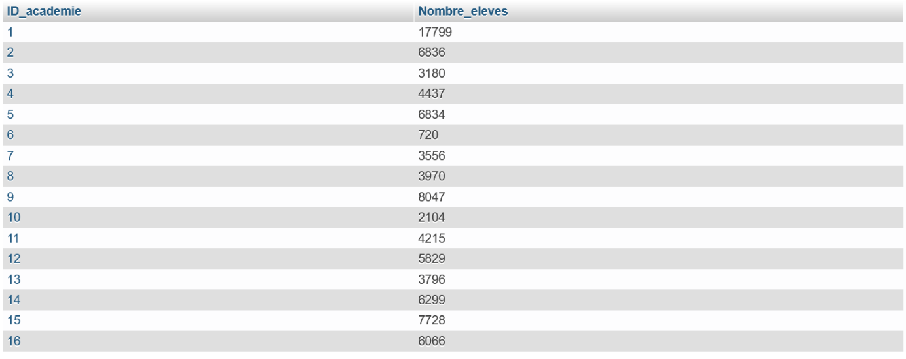
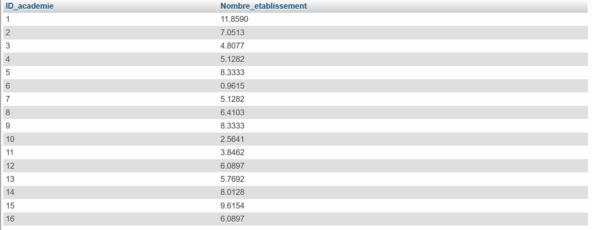

Tout d’abord, l’étude de l’enseignement secondaire en France en 1887 nécessite de faire un point sur la population étudiée. Les tableaux étudiés comprennent ainsi des données sur 22 collèges pour filles, 20 lycées pour filles, 232 collèges pour garçons et 106 lycées pour garçons, soit un total de 380 établissements. Nous consacrerons donc cette première partie à la description des établissements étudiés. Nous commencerons par étudier leur répartition géographique, puis nous nous intéresserons à leur ancienneté et pour finir nous nous questionnerons sur la taille de ces établissements.
A. La répartition géographique des établissements
B. L’ancienneté des établissements
Ces établissements sont aussi assez différents par leur ancienneté. En effet, sur les 380 établissements étudiés, 312 ont une date de fondation antérieure ou égale à 1880 tandis que 68 ont été fondés après cette date. Cela signifie que près de 18% des établissements du secondaire présents en 1887 ont été fondés au cours de la décennie, ce qui dénote une évolution importante de l’enseignement secondaire français à cette époque. Néanmoins cette évolution est essentiellement due à la création de l’enseignement féminin à cette même période. En effet, les 42 collèges et lycées pour filles ont tous une date de fondation postérieure ou égale à 1881. Ils représentent 11 % des établissements présents en 1887 mais près de 62% de ceux dont la date de fondation est postérieure à 1880. Ces fondations récentes tendent aussi à renforcer la centralisation parisienne puisque l’académie de Paris représente 12% des établissements dont la date de fondation est antérieure ou égale à 1880 (tableau 3) contre 14% de ceux dont la date de fondation est postérieure à 1880 (tableau 4)
C. La taille des établissements
Pour finir, il est intéressant de constater que les établissements les plus récents sont aussi les plus petits. En effet, le nombre moyen d’élèves par établissement est de 254 pour ceux dont la date de fondation est antérieure ou égale à 1880 contre 177 pour ceux dont la date de fondation est postérieure à 1880. Cependant il est intéressant de constater que cette baisse est faussée par les établissements féminins, qui sont généralement de plus petite taille. Ainsi donc, le nombre moyen d’élèves par établissement pour garçon dont la date de fondation est postérieure à 1880 est de 233, ce qui signifie que la baisse de la taille des établissements est réelle mais moins marquante qu’il n’y parait. En revanche, le nombre moyen d’élève par établissement féminin est lui de 142. Cela explique notamment que les établissements féminins représentent seulement 7% du total des élèves (5 956 élèves filles) alors que nous avons vu qu’ils représentent 11% des établissements. En moyenne, les établissements pour filles n’accueillent que 61% des effectifs moyens accueillis par les établissements pour garçons.
Ainsi donc, nous avons vu que les établissements secondaires sont assez variés tant par leur répartition géographique, par leur date de fondation que par leur taille. On observe cependant que les établissements pour filles sont généralement très différents de ceux pour garçons car ce sont des établissements de plus petite taille et tous fondés au cours de la décennie 1880.